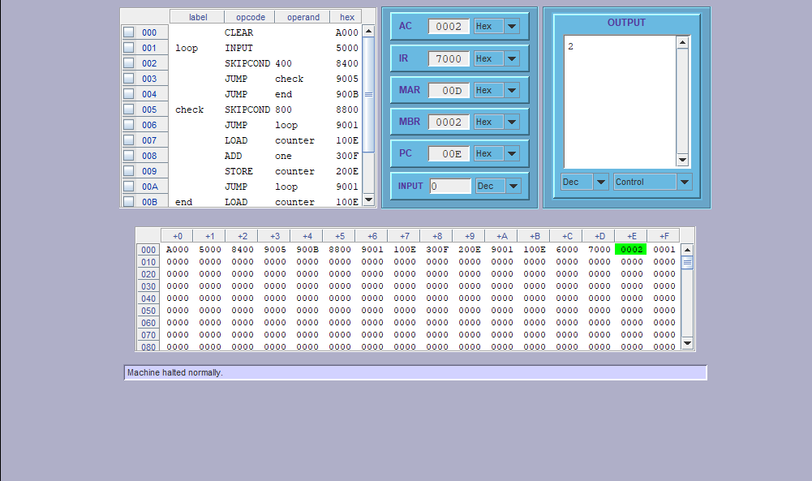

This page is an attempt to illustrate the use of MARIE commands to solve simple
problems,with the hope of aiding the better understanding of MARIE code for the reader .
I hope I save you time , so you can spend it understanding concepts that will enlighten you and in turn the rest of the world.
What you came for
Problem 1: A program to add Two numbers IN memory and display output
CLEAR // clears the AC
LOAD num1
ADD num2
OUTPUT//expected output is 9320
HALT
num1, Dec 234
num2, Dec 9086
Problem 2: A program that reads integers from the keyboard until zero is entered and prints out the total number of all positive integers that were entered.
CLEAR//clears the AC
loop, INPUT// marking where loop should begin
Skipcond 400// if AC =0 SKIP next instruction
Jump check// jump to "check"
Jump end// jump to "end"
check, Skipcond 800// if AC>0 SKIP next instruction
Jump loop// jump to "loop "
Load counter//load the variable counter onnto AC
Add one// add value stored in variable one to counter
Store counter// store what is in AC IN counter
Jump loop// jump to "loop"
end, Load counter// load the variable counter
Output// Output what is in AC
Halt// END PROGRAM
counter, Dec 0// declaring and initializing variables
one, Dec 1

How the simulator should look when running the above program.
Problem 3: A program that reads 10 integers from the keyboard and prints them out in ascending order.
LOAD first_address
STORE current_memory
//iNPUT numbers to sort
loopInput, INPUT
STOREI current_memory// Storing keyboard input in memory addresss "current_memory"
LOAD current_memory// Load memory address "current memory onto AC "
ADD One// TRAVERSING ARRAY
STORE current_memory // populating array with Input value
STORE last_memory
LOAD ctrl
SUBT One
STORE ctrl
SKIPCOND 000// checking if values in array do not exceed 10
JUMP loopInput// if values < 10 re take input
LOAD total// if values =10 reset control
STORE ctrl
LOAD first_address
STORE current_memory
STORE current_small_memory// memory address of smallest value is assumed to be the first address
LOADI current_memory// Take value in memory address " current_memory "
STORE current_small // Store value in memory address "current_small"
//Start sorting
loopSort, LOADI current_memory//access value in memory address "current_memory" lets call it x1 fot illustrative purposes
SUBT current_small// subt the already set value in "current_small" lets call this variable x2
SKIPCOND 000 //x1-x2 is negative if x1 < x2
JUMP check
LOAD current_small// updating of smallest element in array
STORE temp
LOADI current_memory
STORE current_small
LOAD temp
STOREI current_memory
check, LOAD current_memory
ADD One
STORE current_memory// check next element againt last element
SUBT last_memory
SKIPCOND 400// if last element in array = next element , move to next element +1
JUMP loopSort//if last element != next element continue traversing array
LOAD current_small_memory//set next elemebt +1 = smalllest element in array
STORE temp
LOAD current_small
STOREI current_small_memory
LOAD temp
ADD One
STORE current_small_memory
STORE current_memory
LOADI current_memory
STORE current_small
LOAD ctrl// traversing array
SUBT One
STORE ctrl
SKIPCOND 000
JUMP loopSort
LOAD total
STORE ctrl
LOAD first_address
STORE current_memory
loopPrint, LOADI current_memory// loop To traverse array and output all elements in their order
OUTPUT
LOAD current_memory
ADD One
STORE current_memory
LOAD ctrl
SUBT One
STORE ctrl
SKIPCOND 000
JUMP loopPrint
HALT
One, Dec 1
total, Dec 9
ctrl, Dec 9
current_small, Dec 0
first_address, Dec 110
current_small_memory, Dec 0
current_memory, Dec 0
temp, Dec 0
last_memory, Dec 0
Problem 4: A program that reads 20 integers from the keyboard and prints out the smallest.
LOAD first_address
STORE current_memory //iNPUT numbers to sort
loopInput, INPUT
STOREI current_memory
LOAD current_memory
ADD One
STORE current_memory // populating array with Input value
STORE last_memory
LOAD ctrl
SUBT One
STORE ctrl
SKIPCOND 400// checking if values in array do not exceed 20
JUMP loopInput
LOAD total
STORE ctrl
LOAD first_address
STORE current_memory
STORE current_small_memory
LOADI current_memory
STORE current_small
//Start sorting
Here, LOADI current_memory
SUBT current_small
Skipcond 000
JUMP next
JUMP swap
next, LOAD current_memory
ADD One
STORE current_memory
LOAD ctrl
SUBT One
Store ctrl
SKIPCOND 000
JUMP endcheck
JUMP Here
swap, LOADI current_memory
STORE current_small
LOAD ctrl
SUBT One
STORE ctrl
SKIPCOND 000
JUMP endcheck
JUMP Here
endcheck,LOAD ctrl
SUBT One
SKIPCOND 400
JUMP Here
end, LOAD current_small
OUTPUT
HALT
One, Dec 1
total, Dec 20
ctrl, Dec 20
current_small, Dec 0
first_address, Dec 110
current_small_memory, Dec 0
current_memory, Dec 0
temp, Dec 0
last_memory, Dec 0